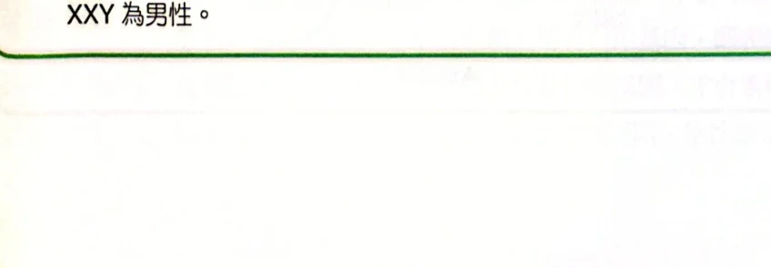
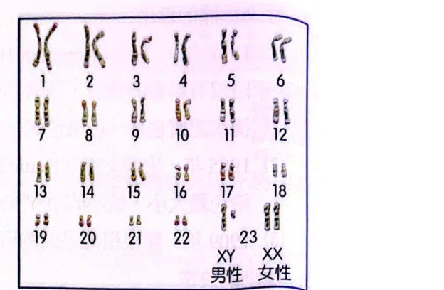
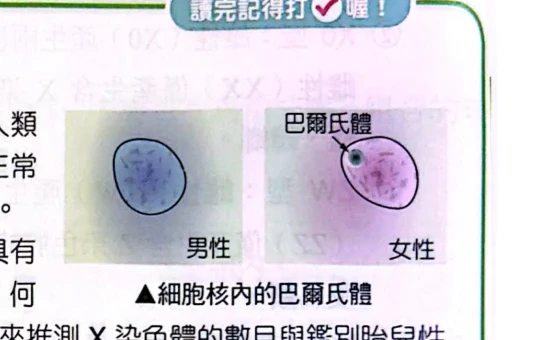
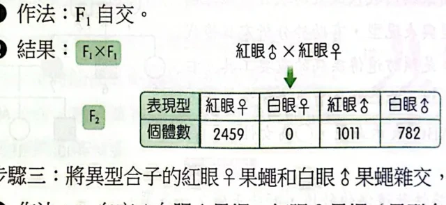
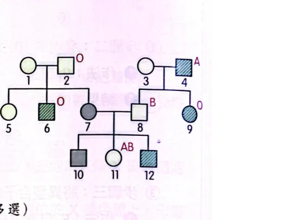
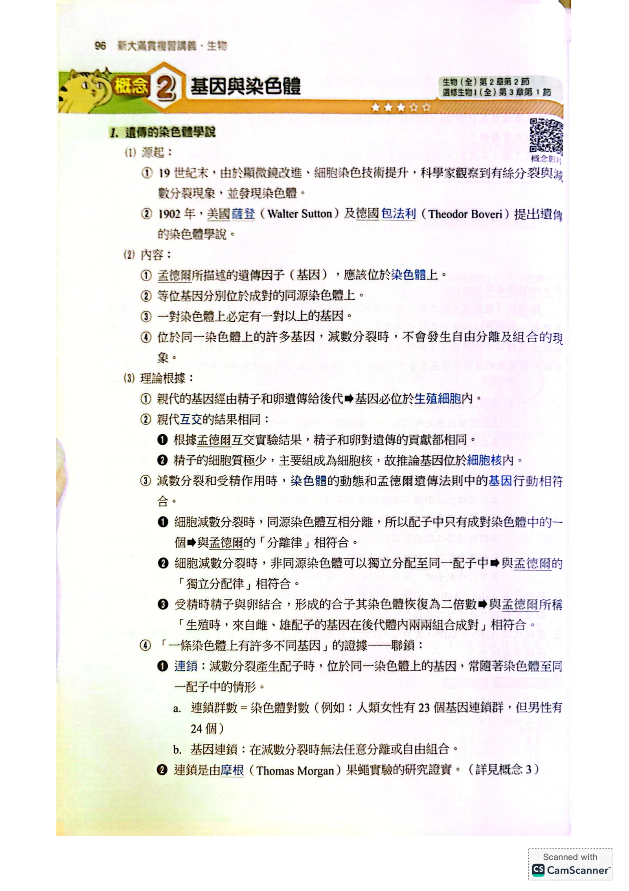
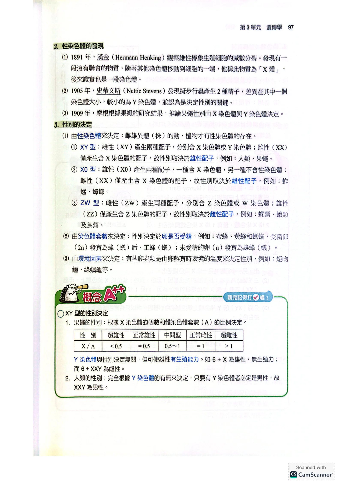
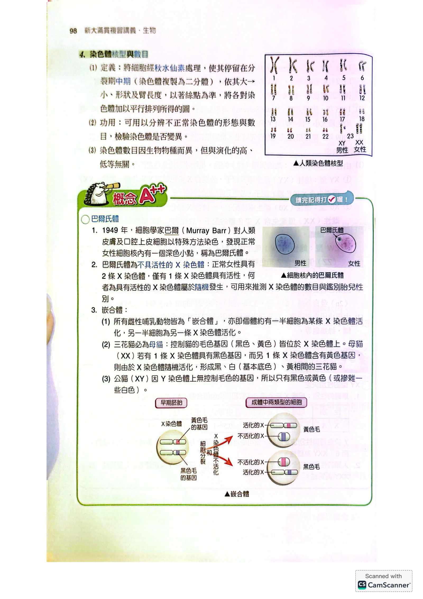
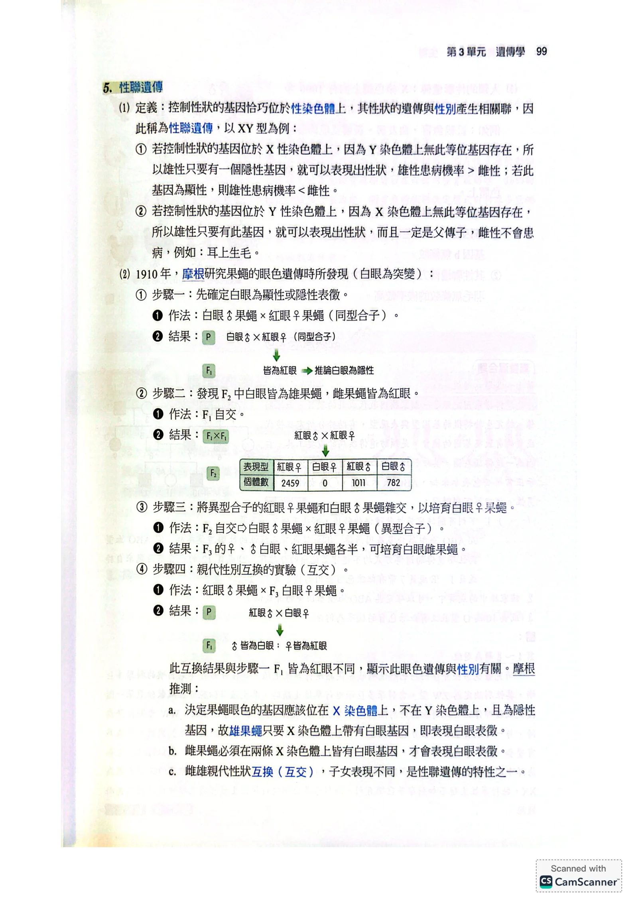
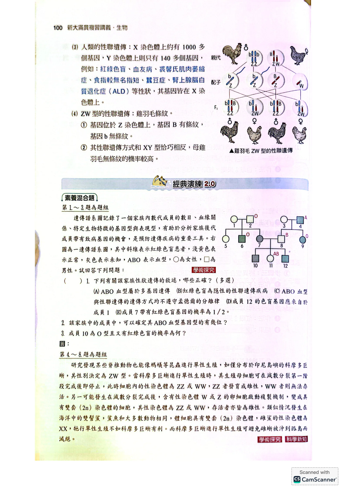

遺傳的染色體學說
- 1902年，美國薩登與德國包法利提出：孟德爾的遺傳因子（基因）應位於染色體上。
- 等位基因分別位於成對的同源染色體上；一對染色體上必定有一對以上的基因。
- 位於同一染色體上的基因，減數分裂時不會自由分離、自由組合。
性染色體的發現與性別決定
- 1891年漢金在椿象生殖細胞中發現「X體」（後證實是染色體）。
- 1905年史蒂文斯發現擬步行蟲的Y染色體較小，是決定性別的關鍵。
- 1909年摩根由果蠅研究推論：性別由X、Y染色體決定。

果蠅性別由X染色體數與體染色體套數（A）比值決定；Y染色體只影響生殖力，不影響性別原講義PDF第95頁・印刷第97頁・點圖放大
染色體核型、巴爾氏體與嵌合體
- 核型：細胞經秋水仙素處理、停留在分裂中期，依大小、形狀、臂長排列染色體所得的圖。
- 功用：分辨染色體形態與數目是否異常。
- 染色體數目因物種而異，與演化高低無關。

人類染色體核型：23對依大小排列，第23對為性染色體（男性XY、女性XX）原講義PDF第96頁・印刷第98頁・點圖放大

正常女性細胞核內可見一個深色小點（巴爾氏體），男性細胞則沒有原講義PDF第96頁・印刷第98頁・點圖放大
- 巴爾氏體：不具活性的X染色體。正常女性2條X中只有1條有活性，哪條有活性是隨機的。
- 嵌合體：所有雌性哺乳動物皆是——約一半細胞某條X活化，另一半是另一條X活化。
- 三花貓必為母貓：毛色基因在X上，母貓（XX）一條X帶黑色基因、另一條帶黃色基因，隨機活化形成黑、白、黃相間；公貓（XY）只有一條X，不會有三花。
性聯遺傳：摩根的果蠅實驗
- 性聯遺傳：控制性狀的基因恰好位於性染色體上，性狀遺傳與性別產生關聯。
- 以XY型為例：基因在X上 → 雄性只要1個隱性基因就表現性狀，患病率通常雄＞雌。
- 基因在Y上 → 雄性一定父傳子，雌性不會患病（例：耳朵生毛）。

摩根果蠅白眼實驗F₂結果：白眼全部是雄蠅，雌蠅全為紅眼原講義PDF第97頁・印刷第99頁・點圖放大
摩根步驟：①白眼♂×紅眼♀(同型合子)，F₁皆紅眼→推論白眼隱性。②F₁自交，F₂白眼全是雄蠅、雌蠅全紅眼。③異型合子紅眼♀×白眼♂培育出白眼雌蠅。④互交（紅眼♂×白眼♀）：F₁變成「♂皆白眼、♀皆紅眼」——與步驟①的F₁（皆紅眼）不同，顯示眼色遺傳與性別有關。
性聯遺傳的應用：人類疾病與ZW型（雞）
- 人類X染色體上約1000多個基因，Y染色體上只有140多個——性聯疾病多半在X上：紅綠色盲、血友病、裘馨氏肌肉萎縮症、蠶豆症、腎上腺腦白質退化症(ALD)等。
- ZW型的性聯遺傳（雞羽毛條紋）：基因在Z上，恰與XY型相反——母雞（ZW）羽毛無條紋的機率較高。
經典演練：色盲與ABO血型族譜
遺傳譜系圖記錄一個家族內數代成員的血緣關係與基因型、表現型，右圖斜線表示紅綠色盲患者，淺色表正常，灰色表未知，標示字母為ABO血型。

家族遺傳譜系圖：斜線＝紅綠色盲患者，淺色＝正常，灰色＝未知，標示字母為ABO血型原講義PDF第98頁・印刷第100頁・點圖放大
依上方族譜圖（斜線＝紅綠色盲，淺色＝正常，灰色＝未知，字母＝ABO血型），回答以下問題：
- 下列有關該家族性狀遺傳的敘述，哪些正確？（多選）(A)ABO血型屬於多基因遺傳 (B)紅綠色盲為隱性的性聯遺傳疾病 (C)ABO血型與性聯遺傳的遺傳方式均不遵守孟德爾的分離律 (D)成員12的色盲基因應來自於成員1 (E)成員7帶有紅綠色盲基因的機率為1/2
- 該家族成員中，可以確定其ABO血型基因型的有幾位？
- 成員10為O型且又有紅綠色盲的機率為何？
看答案與詳解收起
答①B、D、E。②5位（成員2、4、6、9、11）。③紅綠色盲機率確定為1/2；血型O的機率因成員7、8的基因型無法完全確定，不能給出單一數值。
解第1題：
- A錯：ABO血型是同一基因座上3個對偶基因（IA、IB、i）決定，屬於「複對偶基因」遺傳，不是由多個不同基因座決定的「多基因遺傳」（如身高、膚色），兩者容易混淆。
- B對：紅綠色盲是教科書標準的X染色體隱性遺傳病例。
- C錯：不論是ABO血型（體染色體多對偶基因）還是性聯遺傳，配子形成時都還是「每個親代把自己兩個等位基因中的一個傳給子代」，仍然遵守分離律；性聯遺傳只是多了「這個基因剛好在性染色體上」這個額外線索，不是不遵守分離律。
- D對：成員12（色盲男性）的色盲X一定來自母親7（父親8只給兒子Y）。成員7的父親是2（正常），父親給女兒的X一定帶正常基因，所以7身上的色盲基因不可能來自父親2，只能來自母親1。
- E對：成員6（男性，色盲）的X來自母親1，可知1是帶因者（Xx）。父親2正常（XY）。女兒7從父親得到正常X（必定），從母親1得到正常或色盲X各半，所以7帶有色盲基因的機率＝1/2。
第2題：O型與AB型的基因型是唯一的（O一定ii，AB一定IAIB），A型、B型本身有兩種可能基因型，需要靠子代資料才能鎖定。逐一檢查：
| 成員 | 表現型 | 基因型 | 能否確定 |
|---|
| 2 | O | ii | 能（O型天生唯一） |
| 4 | A | IAi | 能：子女9是O型（ii），4必須提供i |
| 6 | O | ii | 能（O型天生唯一） |
| 8 | B | IBi或IBIB | 不能：沒有任何子代資料能排除IBIB |
| 9 | O | ii | 能（O型天生唯一） |
| 11 | AB | IAIB | 能（AB型天生唯一） |
其餘成員（1、3、5、7、10、12）表現型未知或未標示，無法鎖定。合計能確定的是2、4、6、9、11，共5位。
第3題：成員10的父母是7（女）×8（男）。色盲部分：10是男生，Y一定來自父親8（不影響其X），X一定來自母親7；母親7已由第1題確定是色盲帶因者（Xx），所以10有色盲X的機率＝1/2，與父親8的基因型無關（兒子不會拿到父親的X）。血型O部分：10要是O型（ii），必須同時從7和8各拿到一個i。但第2題已指出成員7只能確定帶有一個IA（來自讓11成為AB型的分析），她的另一個等位基因可能是IA、IB或i，無法確定；成員8也只能確定帶有IB，另一個等位基因可能是IB或i，同樣無法確定。因此「10為O型」的機率無法由本族譜算出單一數值——這題的重點是看出哪些機率能算、哪些不能算，不是硬湊一個分數。
小結O、AB表現型的基因型是唯一的，可以直接倒推；A、B表現型有兩種可能，要有子代證據才能鎖定。性聯遺傳算機率時，兒子的X一律看母親，跟父親的基因型無關。
經典演練：單性生殖與性別決定
研究發現某些脊椎動物也能像螞蟻等昆蟲進行單性生殖，如僅分布於印尼島嶼的科摩多巨蜥，性別決定為ZW型。科摩多巨蜥單性生殖時，生殖母細胞在減數分裂第一階段完成後即停止，細胞內性染色體為ZZ或WW，ZZ發育成雄性，WW無法存活；另一可能是減數分裂完成後，含Z或W的卵細胞複製成雙套(2n)，存活者也都是雄性。海洋中的雙髻鯊和大多數動物相同，體細胞具雙套(2n)染色體，雌鯊性染色體為XX，牠行單性生殖不如科摩多巨蜥有利。而科摩多巨蜥進行單性生殖可避免雌蜥被沖到孤島而滅絕。
下列有關單性生殖的敘述，何者正確？(A)脊椎動物才可行單性生殖 (B)單性生殖不經過減數分裂 (C)單性生殖不經過受精作用 (D)單性生殖的物種大多為雌雄同體
看答案與詳解收起
答C。
解A錯：文中提到螞蟻等昆蟲（非脊椎動物）也能行單性生殖，科摩多巨蜥是脊椎動物的例子，但不是說只有脊椎動物才行。B錯：文中明確說生殖母細胞「在減數分裂第一階段完成後即停止」，表示減數分裂仍有發生，只是中途停止或變化，不是完全不經過減數分裂。C對：單性生殖的定義就是不需要精卵結合、不經過受精作用，由未受精的卵自行發育。D錯：文中討論的科摩多巨蜥、雙髻鯊都不是雌雄同體，牠們平常仍是雌雄異體，只是在特殊情況下能行單性生殖。
小結單性生殖的核心定義：不經過受精；但減數分裂通常仍會發生，只是過程或結果和一般生殖不同。
下列有關動物的生殖與性別決定之敘述，哪些正確？（多選）(A)單性生殖屬於無性生殖，其幼體的基因組合與母方完全相同 (B)有性生殖的動物必定有精卵受精現象 (C)有性生殖產生的受精卵皆留在母體內發育成幼體 (D)動物的性別可由染色體、基因或環境因素來決定 (E)鯊魚的性別決定模式與科摩多巨蜥相同
看答案與詳解收起
答B、D。
解A錯：以科摩多巨蜥為例，母體是ZW，但單性生殖產生的後代可以是ZZ（雄性）或WW（無法存活），ZZ後代的性染色體組合跟母方的ZW並不相同，不能說「基因組合與母方完全相同」。B對：這題定義「有性生殖」就是精卵結合的生殖方式，必定有受精現象（單性生殖因為沒有受精，不屬於這裡講的有性生殖）。C錯：很多行有性生殖的動物是卵生，受精卵排出體外孵化，不會都留在母體內發育。D對：本單元就是在講性別決定的三種機制——染色體（XY/XO/ZW）、染色體套數、環境溫度，三者都成立。E錯：文中明確指出鯊魚的性別決定模式是XX（雌）/XY型，跟科摩多巨蜥的ZW型不同，正因為類型不同，才會在後面造成單性生殖結果的差異。
小結判斷單性生殖後代基因組合，要看性別決定型：ZW型母本可能生出跟自己性染色體不同的後代（ZZ），不是複製貼上。
- 根據文中敘述，雙髻鯊行單性生殖時，產下雄幼鯊的機率為何？
- 單性生殖在演化及環境適應上最大的缺點是什麼？
- 雙髻鯊行單性生殖為何不如科摩多巨蜥有利？
看答案與詳解收起
答①機率為0。②後代缺乏基因重組帶來的遺傳多樣性，較難適應環境變化。③雙髻鯊（XX/XY型）單性生殖只能產生XX雌性，族群無法靠自己繁衍下一代；科摩多巨蜥（ZW型）單性生殖能產生ZZ雄性，一隻雌蜥就能建立起可持續繁殖的族群。
解第6題：雌鯊的性染色體是XX，身上沒有Y染色體。單性生殖只用母體自己的染色體（不經受精），所以產生的後代一定是XX，不可能出現Y，也就不可能是雄性（鯊魚是XY型，雄性需要Y）。因此產下雄幼鯊的機率是0。
第7題：單性生殖的後代遺傳物質幾乎全部來自單一母體，缺少兩個親代基因重組帶來的變異，族群的遺傳多樣性偏低；環境一旦劇烈變化（如新疾病、氣候改變），缺乏多樣性的族群比較難找到足以存活的個體，滅絕風險較高。
第8題：雙髻鯊是XX/XY型，單性生殖後代只能是XX雌性（第6題已算出機率為0的雄性），代表這樣產生的族群沒有雄性可以配對，無法繼續行有性生殖，是一條遺傳上的死路。科摩多巨蜥是ZW型，單性生殖可以產生ZZ雄性（存活），所以即使只有一隻雌蜥被沖到孤島，牠也能生出兒子，讓族群之後恢復有性生殖、延續下去——這正是文末「科摩多巨蜥進行單性生殖可避免雌蜥被沖到孤島而滅絕」的原因。
小結判斷單性生殖能不能生出雄性，先看物種的性別決定型：XX/XY型母本永遠生不出雄性；ZW型母本可以。
本單元整理
下一節接著處理「連鎖與互換」：同一染色體上的基因為什麼有時仍會分開？
核對原講義全頁（生物1 PDF94–99）
本節對應印刷96–101頁（概念2 基因與染色體，至概念3「基因的連鎖與互換」開始前為止）。連鎖與互換留待下一單元專篇處理。

PDF第94頁／印刷第96頁
PDF第95頁／印刷第97頁
PDF第96頁／印刷第98頁
PDF第97頁／印刷第99頁
PDF第98頁／印刷第100頁 PDF第99頁／印刷第101頁
PDF第99頁／印刷第101頁延伸核對：NIH：性聯遺傳；NIH：染色體核型。